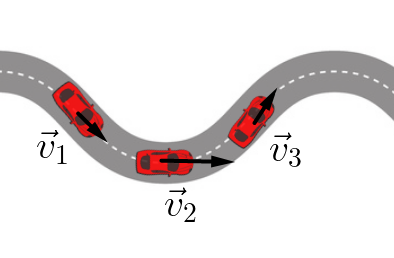
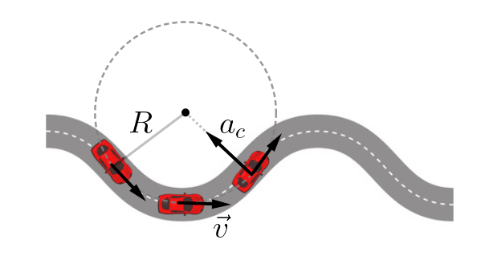
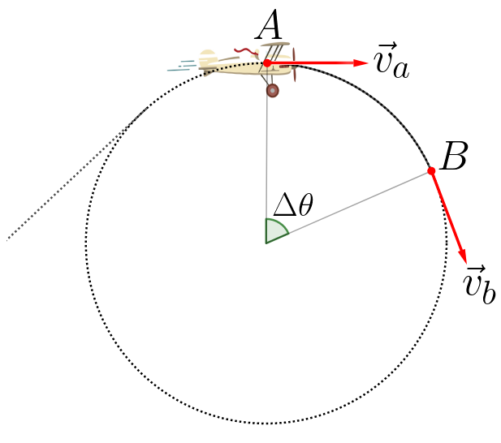
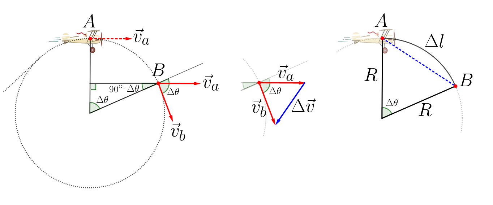
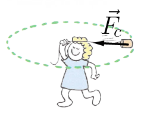
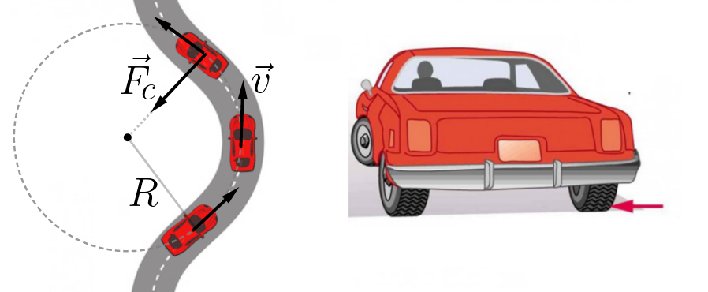
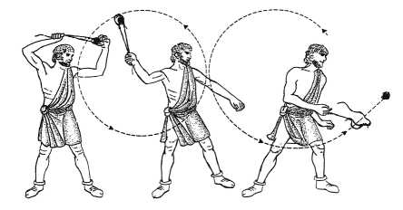
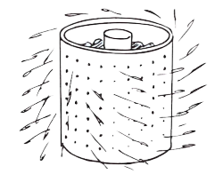
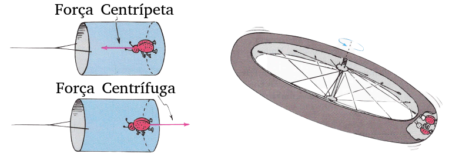

Aula2-18: Aceleração e força centrípeta
Aceleração tangencial e aceleração centrípeta
|
Aprendemos em aulas anteriores que a aceleração é uma grandeza que nos informa como a velocidade varia com o tempo. Naquele contexto, estudamos a aceleração tangencial, relacionada a alterações no módulo da velocidade. Agora, introduziremos um novo tipo de aceleração, relacionado a alterações na direção e no sentido da velocidade: a aceleração centrípeta. Veja a ilustração ao lado: como o móvel tem sua velocidade alterada ao mesmo tempo em módulo, direção e sentido, agem simultaneamente sobre ele a aceleração tangencial e a aceleração centrípeta. |
 |
➔ ACELERAÇÃO TANGENCIAL: a aceleração tangencial é a que promove alteração no módulo do vetor velocidade. Ela não é capaz de alterar a direção nem o sentido desse vetor.
A fórmula da aceleração tangencial, já conhecida de aulas anteriores, é a seguinte:
➔ ACELERAÇÃO CENTRÍPETA: a aceleração centrípeta, diferentemente da tangencial, não altera o módulo do vetor velocidade: ela é responsável apenas pela variação da direção e do sentido desse vetor.
A fórmula que nos dá o módulo da aceleração centrípeta é a seguinte:
Em que
◦ é a velocidade tangencial do móvel;
◦ é o raio da circunferência cujo arco é percorrido pelo móvel.

A MEDIDA DA ACELERAÇÃO CENTRÍPETA: DEMONSTRAÇÃO GEOMÉTRICA
Demonstração:
|
A imagem ao lado representa um móvel em movimento circular uniforme. Ao ir do ponto A ao ponto B, o móvel tem sua velocidade alterada em direção e sentido. Para encontrarmos o valor da aceleração centrípeta, siga os passos: 1. Calculamos a variação de velocidade entre A e B subtraindo o vetor velocidade em A do vetor velocidade em B (Δv = vB − vA); 2. Percebemos que, para ângulos pequenos, o arco de circunferência pode ser aproximado por um segmento de reta, formando um triângulo semelhante ao triângulo de velocidades. |
 |

3. Podemos escrever a variação angular em função do arco de circunferência percorrido:
E então, por semelhança de triângulos, podemos escrever:
Força tangencial e força centrípeta
A força tangencial é a que imprime no corpo uma aceleração tangencial: ela altera o módulo do vetor velocidade sem mudar sua direção. A força centrípeta é a que altera a direção do vetor velocidade do corpo, sem modificar o módulo dele.
|
A figura ao lado mostra um corpo de massa m sob a ação de uma força centrípeta. Observe que, a cada instante, a direção do vetor velocidade é alterada. |
 |
A fórmula da força resultante tangencial, já conhecida de aulas anteriores, é a seguinte:
Já a força resultante centrípeta é dada por:
Substituindo a aceleração centrípeta, temos:

|
Movimento |
Força / aceleração tangencial |
Força / aceleração centrípeta |
|
|---|---|---|---|
|
Retilíneo |
Uniforme |
Nula |
Nula |
|
Uniformemente variado |
Não nula |
Nula |
|
|
Circular |
Uniforme |
Nula |
Não nula |
|
Uniformemente variado |
Não nula |
Não nula |
|
A "força" centrífuga
O que chamamos de "força" centrífuga não é, na verdade, uma força de verdade: ela não resulta de uma interação entre dois corpos, mas de uma manifestação do princípio da inércia. Para fazer um corpo girar, aplicamos sobre ele uma força centrípeta. Se essa força deixar de existir, o corpo tende a manter sua trajetória retilínea e sai pela tangente. Quando isso acontece, temos a impressão de que algo o arremessa "para fora" — e é a essa impressão que damos o nome de "força" centrífuga (a que "foge do centro").
A funda de Davi
Segundo os relatos bíblicos, o jovem Davi, futuro rei de Israel, amparado por uma funda, derrotou em combate o gigante Golias.
Uma funda é um armamento que consiste em uma correia dobrada, em cujo centro se deposita um projétil. Ao girar a correia, o projétil, mantido pela tensão, move-se circularmente. Ao soltar uma das extremidades da correia, a força centrípeta deixa de existir e o projétil é "disparado" pela tangente.

A máquina de secar roupas

As paredes dessas máquinas são projetadas para obrigar as roupas ao movimento circular — o que não acontece com a água. A água, portanto, atravessa os furos das paredes e é ejetada para fora.
Colônias espaciais
Construir uma nave espacial que, assemelhando-se a um pneu, execute um movimento circular uniforme é uma maneira de se viabilizar a simulação de gravidade:

A ficção científica dos filmes 2001 - Uma Odisseia no Espaço (1969) e Interstelar (2014) faz uso de ideias semelhantes para a construção de colônias espaciais.